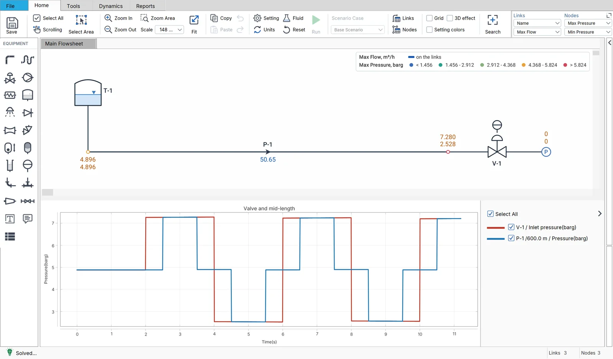
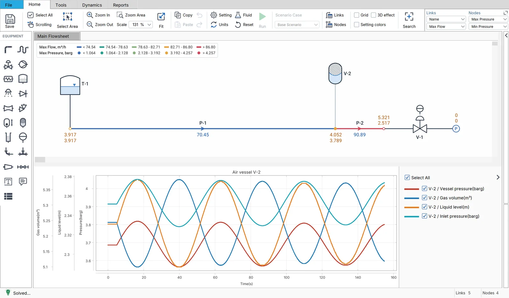
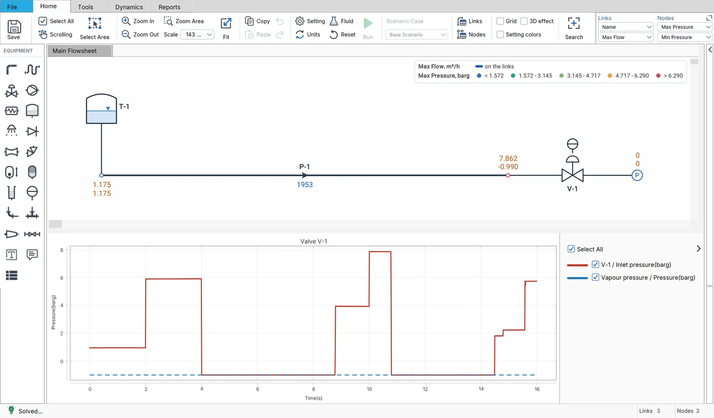

Flowmax · Transient
Validated against the textbooks
The transient solver of Flowmax is checked against the closed-form theory of hydraulic transients: results any engineer can verify in Wylie & Streeter, Chaudhry, Thorley, Parmakian and Jaeger.
The transient solver of Flowmax is checked against the closed-form theory of hydraulic transients: results any engineer can verify in Wylie & Streeter, Chaudhry, Thorley, Parmakian and Jaeger.
| Case | Theory | Values compared | Largest deviation | Result |
|---|---|---|---|---|
| A | Wave speed of a liquid in an elastic pipe | 27 | 1.14 % | ✓ within |
| B | Instantaneous closure: the Joukowsky rise and the timing of the wave | 18 | 0.96 % | ✓ within |
| C | Gradual closure: Allievi's interlocking equations | 19 | 0.035 m | ✓ within |
| D | Establishment of flow: the rigid water column | 10 | 1.06 % | ✓ within |
| E | Mass oscillation of a surge tank | 5 | 2.68 % | ✓ within |
| F | Air vessel: the column on a gas spring | 10 | 1.32 % | ✓ within |
| G | A tank whose level moves: draining through a valve | 5 | 0.39 % | ✓ within |
| H | Run-down of a tripped pump on a resistance | 6 | 0.56 % | ✓ within |
| I | Column separation at a closed valve: the discrete vapour cavity | 12 | 2.48 % | ✓ within |
| K | Surge relief valve: opening and flow | 9 | 0.00 % | ✓ within |
Each case builds the smallest Flowmax model the theory describes, runs it, and sets the two results side by side.
1 to 3 % for a quantity the theory gives exactly, and one or two time steps for a time.
A value outside its tolerance is never tuned to fit: it is explained, and what it says about the program is reported.



Try the Transient mode of Flowmax on your own network.